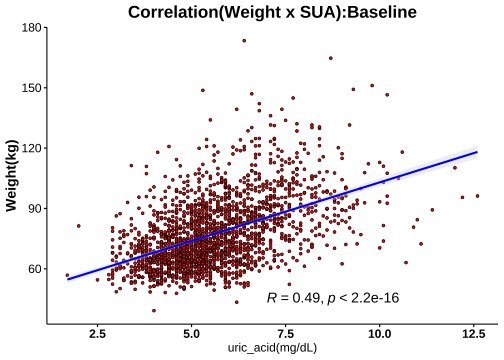

1.8 分層分析-3: 尿酸(Serum Uric Acid)
1.8.1 相關分析(Correlation Analysis)




1.8.2 Cutoff-1 (♂7.6/♀6.6)
| No change | Decrease | Increase | Normal>High | High>Normal | High>High | Sum | |
|---|---|---|---|---|---|---|---|
| female | 103 | 574 | 138 | 31 | 93 | 31 | 970 |
| male | 17 | 82 | 18 | 7 | 45 | 20 | 189 |
| Sum | 120 | 656 | 156 | 38 | 138 | 51 | 1159 |
|
Cutoffs: Male: 7.6 (mg/dL) Female: 6.6(mg/dL) |


成效(Effectiveness)


成效(%)-Blood

| No change | Decrease | Increase | Normal>High | High>Normal | High>High | No change | Decrease | Increase | Normal>High | High>Normal | High>High | |
|---|---|---|---|---|---|---|---|---|---|---|---|---|
| 體重(T0) | 71.53 ± 1.27 | 72.03 ± 0.54 | 70.71 ± 1.11 | 74.18 ± 2.23 | 81.65 ± 1.42 | 88.29 ± 3.65 | 96.81 ± 6.22 | 94.19 ± 1.61 | 85.89 ± 3.35 | 96.2 ± 9.37 | 98.03 ± 2.31 | 101.22 ± 4.96 |
| BMI(T0) | 27.89 ± 0.45 | 27.87 ± 0.2 | 27.36 ± 0.38 | 28.71 ± 0.66 | 31.36 ± 0.52 | 33.96 ± 1.2 | 32.62 ± 2.21 | 31.21 ± 0.47 | 28.35 ± 0.96 | 31.9 ± 2.71 | 32.5 ± 0.61 | 33.28 ± 1.55 |
| 體脂重(T0) | 29.16 ± 0.86 | 28.72 ± 0.39 | 27.94 ± 0.75 | 31.57 ± 1.59 | 35.58 ± 1.02 | 40.62 ± 2.44 | 34.88 ± 4.52 | 31.27 ± 1.04 | 25.89 ± 2.15 | 34.14 ± 5.9 | 34.48 ± 1.67 | 36.94 ± 3.75 |
| 體脂率(T0) | 40.06 ± 0.6 | 39.09 ± 0.26 | 38.75 ± 0.54 | 41.89 ± 0.91 | 42.92 ± 0.59 | 45.14 ± 1.08 | 34.19 ± 2 | 32.67 ± 0.61 | 29.55 ± 1.59 | 34.31 ± 2.65 | 34.44 ± 0.92 | 34.99 ± 1.88 |
| 骨骼肌質量指數(T0) | 6.7 ± 0.07 | 6.85 ± 0.03 | 6.74 ± 0.07 | 6.8 ± 0.1 | 7.3 ± 0.08 | 7.57 ± 0.19 | 8.75 ± 0.29 | 8.88 ± 0.08 | 8.44 ± 0.19 | 8.79 ± 0.47 | 8.92 ± 0.09 | 8.91 ± 0.18 |
| 骨骼肌率(T0) | 32.53 ± 0.32 | 33.18 ± 0.14 | 33.21 ± 0.29 | 31.67 ± 0.48 | 31.29 ± 0.31 | 30.15 ± 0.59 | 37.04 ± 1.09 | 38.13 ± 0.36 | 39.64 ± 0.93 | 36.81 ± 1.43 | 37.1 ± 0.53 | 36.8 ± 1.05 |
| 內臟脂肪面積(T0) | 143.15 ± 4.87 | 141.44 ± 1.87 | 139.54 ± 3.92 | 156.67 ± 7.92 | 174.44 ± 4.31 | 198.72 ± 7.7 | 142.58 ± 14.14 | 136.66 ± 5.38 | 107.55 ± 9.97 | 129.9 ± 15.55 | 143.57 ± 6.96 | 137.98 ± 13.76 |
| 腰圍(T0) | 92.15 ± 1.11 | 92.13 ± 0.48 | 90.66 ± 0.95 | 95.49 ± 2.21 | 101.05 ± 1.17 | 106 ± 2.49 | 107.88 ± 4.36 | 105.75 ± 1.31 | 97.15 ± 2.82 | 106.49 ± 6.77 | 110.9 ± 2.2 | 111.31 ± 4.1 |
| 除脂體重(T0) | 42.37 ± 0.56 | 43.31 ± 0.22 | 42.77 ± 0.5 | 42.62 ± 0.77 | 46.07 ± 0.57 | 47.67 ± 1.44 | 61.93 ± 1.97 | 62.91 ± 0.81 | 60.01 ± 1.81 | 62.06 ± 4.25 | 63.54 ± 0.96 | 64.28 ± 1.69 |
| 基礎代謝率(T0) | 1285.43 ± 12.19 | 1305.59 ± 4.8 | 1293.94 ± 10.85 | 1290.61 ± 16.66 | 1365.23 ± 12.28 | 1399.61 ± 31.22 | 1707.88 ± 42.5 | 1728.91 ± 17.51 | 1666.06 ± 39.06 | 1710.57 ± 91.82 | 1742.4 ± 20.67 | 1758.5 ± 36.51 |
| 糖化血色素(T0) | 5.49 ± 0.03 | 5.47 ± 0.02 | 5.48 ± 0.05 | 5.49 ± 0.08 | 5.71 ± 0.05 | 6.1 ± 0.28 | 6.12 ± 0.25 | 5.65 ± 0.05 | 6.13 ± 0.27 | 5.7 ± 0.26 | 5.64 ± 0.05 | 5.82 ± 0.2 |
| 空腹血糖(T0) | 86.93 ± 2.62 | 85.51 ± 0.42 | 85.3 ± 1.31 | 85.61 ± 2.12 | 87.95 ± 1.47 | 96.48 ± 7.47 | 97.82 ± 7.09 | 89.22 ± 1.2 | 99.94 ± 8.42 | 92.29 ± 6.19 | 85.96 ± 1.43 | 88.75 ± 3.42 |
| 空腹胰島素(T0) | 11.41 ± 0.71 | 11.2 ± 0.33 | 9.61 ± 0.46 | 14.41 ± 1.97 | 17.49 ± 1.21 | 22.32 ± 4.04 | 19.3 ± 3 | 16.12 ± 1.13 | 16.55 ± 2.15 | 17.23 ± 5.73 | 20.18 ± 1.96 | 19.08 ± 2.55 |
| 胰島素阻抗值(T0) | 2.43 ± 0.17 | 2.49 ± 0.1 | 2.04 ± 0.1 | 3.1 ± 0.44 | 3.88 ± 0.28 | 5.19 ± 0.95 | 4.59 ± 0.69 | 3.6 ± 0.26 | 4.33 ± 0.9 | 4.41 ± 1.9 | 4.44 ± 0.51 | 4.36 ± 0.66 |
| β細胞功能(T0) | 198.42 ± 14.86 | 192.01 ± 11.99 | 165.45 ± 25 | 248.65 ± 34.61 | 313.42 ± 38.29 | 342.98 ± 54.54 | 265.26 ± 53.38 | 242.65 ± 23.69 | 214.99 ± 25.74 | 200.69 ± 35.62 | 352.79 ± 40.83 | 317.36 ± 39.45 |
| 三酸甘油脂(T0) | 103.12 ± 4.68 | 105.09 ± 2.32 | 93.07 ± 3.89 | 96.81 ± 8.4 | 149.19 ± 8.2 | 168.26 ± 30.67 | 140.41 ± 16.92 | 140.73 ± 9.49 | 162.78 ± 21.77 | 107.43 ± 13.2 | 191.27 ± 16.73 | 172.8 ± 23.15 |
| 總膽固醇(T0) | 198.46 ± 3.59 | 196.41 ± 1.55 | 195.91 ± 3.11 | 198.35 ± 7.27 | 202.04 ± 4.67 | 197.35 ± 5.71 | 181.24 ± 8.81 | 196.34 ± 3.85 | 192 ± 8.09 | 198.14 ± 10.95 | 206.96 ± 5.49 | 209.8 ± 11.93 |
| 高密度脂蛋白(T0) | 57.63 ± 1.38 | 57.14 ± 0.55 | 59.21 ± 1.19 | 56.01 ± 2.59 | 50.57 ± 1.14 | 46.59 ± 2.08 | 41.84 ± 1.19 | 46.44 ± 0.83 | 45.97 ± 2.32 | 46.36 ± 2.35 | 42.92 ± 1.45 | 44.6 ± 3.1 |
| 低密度脂蛋白(T0) | 121.98 ± 3.1 | 122.28 ± 1.34 | 120.12 ± 2.63 | 127.65 ± 6.31 | 130.18 ± 4.07 | 126.35 ± 6.04 | 123.65 ± 8.05 | 129.49 ± 3.31 | 124.17 ± 7.3 | 136.29 ± 10.8 | 136.73 ± 4.94 | 139.05 ± 10.46 |
| 尿酸(T0) | 4.75 ± 0.09 | 5.1 ± 0.03 | 4.32 ± 0.07 | 5.47 ± 0.12 | 7.35 ± 0.09 | 7.74 ± 0.18 | 5.56 ± 0.3 | 6.27 ± 0.1 | 5.24 ± 0.25 | 6.81 ± 0.27 | 8.4 ± 0.1 | 9.18 ± 0.29 |
| 澱粉脢(T0) | 44.45 ± 1.23 | 45.76 ± 0.62 | 46.96 ± 1.54 | 47.13 ± 2.73 | 42.1 ± 1.47 | 36.19 ± 1.59 | 40.18 ± 2.84 | 43.87 ± 2.17 | 47.5 ± 2.87 | 38.71 ± 3.04 | 38.78 ± 1.5 | 39.95 ± 3.24 |
| 解脂脢(T0) | 24.33 ± 1.04 | 24.33 ± 0.6 | 25.03 ± 1.69 | 26.74 ± 2.76 | 25.71 ± 1.6 | 28 ± 2.58 | 24 ± 2.85 | 28.28 ± 3.4 | 28.39 ± 4.35 | 21.43 ± 3.06 | 25.09 ± 2.02 | 24 ± 3.51 |
| 體重(T1) | 66.76 ± 1.22 | 67.63 ± 0.52 | 65.62 ± 1.05 | 67.63 ± 1.99 | 76.26 ± 1.39 | 82.21 ± 3.32 | 90.55 ± 6.15 | 87.42 ± 1.56 | 80.63 ± 3.08 | 86.49 ± 8.31 | 91.68 ± 2.32 | 93.5 ± 5.01 |
| BMI(T1) | 25.81 ± 0.41 | 26.16 ± 0.19 | 25.38 ± 0.35 | 26.18 ± 0.58 | 29.3 ± 0.52 | 31.63 ± 1.11 | 30.52 ± 2.18 | 28.97 ± 0.46 | 26.63 ± 0.91 | 28.68 ± 2.39 | 30.38 ± 0.62 | 30.75 ± 1.58 |
| 體脂重(T1) | 25.53 ± 0.83 | 25.71 ± 0.37 | 24.48 ± 0.71 | 27.47 ± 1.52 | 31.87 ± 1.03 | 36.6 ± 2.28 | 30.39 ± 4.5 | 26.39 ± 1.02 | 22.11 ± 2.17 | 26.77 ± 5.08 | 29.93 ± 1.73 | 30.7 ± 3.8 |
| 體脂率(T1) | 37.41 ± 0.64 | 37.16 ± 0.27 | 36.5 ± 0.56 | 39.85 ± 1.1 | 40.98 ± 0.66 | 43.56 ± 1.13 | 31.42 ± 2.3 | 29.52 ± 0.68 | 26.66 ± 1.79 | 29.54 ± 2.89 | 31.7 ± 1.06 | 30.93 ± 2.16 |
| 骨骼肌質量指數(T1) | 6.47 ± 0.07 | 6.61 ± 0.03 | 6.5 ± 0.06 | 6.4 ± 0.09 | 7 ± 0.08 | 7.29 ± 0.18 | 8.58 ± 0.31 | 8.58 ± 0.08 | 8.23 ± 0.15 | 8.46 ± 0.41 | 8.65 ± 0.09 | 8.7 ± 0.19 |
| 骨骼肌率(T1) | 33.85 ± 0.34 | 34.09 ± 0.15 | 34.27 ± 0.3 | 32.5 ± 0.58 | 32.22 ± 0.35 | 30.88 ± 0.6 | 38.49 ± 1.27 | 39.77 ± 0.39 | 41.14 ± 1.06 | 39.44 ± 1.57 | 38.57 ± 0.6 | 38.87 ± 1.2 |
| 內臟脂肪面積(T1) | 125.08 ± 4.72 | 125.58 ± 1.88 | 120.25 ± 3.76 | 138.05 ± 7.84 | 157.12 ± 4.62 | 174.41 ± 8.92 | 120.54 ± 13.61 | 112.37 ± 5.13 | 94.99 ± 9.29 | 114.14 ± 22.11 | 123.56 ± 7.39 | 106.13 ± 13.02 |
| 腰圍(T1) | 87.71 ± 1.11 | 87.75 ± 0.47 | 85.52 ± 0.9 | 89.05 ± 2.03 | 96 ± 1.2 | 100.44 ± 2.42 | 100.19 ± 4.15 | 98.81 ± 1.36 | 91.32 ± 2.98 | 97.11 ± 6.33 | 104.53 ± 2.34 | 102.83 ± 4.33 |
| 除脂體重(T1) | 41.23 ± 0.52 | 41.92 ± 0.21 | 41.15 ± 0.48 | 40.15 ± 0.67 | 44.4 ± 0.54 | 45.61 ± 1.27 | 60.15 ± 2 | 61.03 ± 0.78 | 58.52 ± 1.58 | 59.71 ± 3.88 | 61.75 ± 0.91 | 62.8 ± 1.71 |
| 基礎代謝率(T1) | 1260.58 ± 11.32 | 1275.38 ± 4.59 | 1258.72 ± 10.36 | 1237.29 ± 14.44 | 1328.92 ± 11.73 | 1355.16 ± 27.31 | 1669.47 ± 43.25 | 1688.1 ± 16.78 | 1634.06 ± 34.07 | 1659.86 ± 83.65 | 1703.76 ± 19.58 | 1726.15 ± 37.07 |
| 糖化血色素(T1) | 5.26 ± 0.04 | 5.23 ± 0.01 | 5.17 ± 0.03 | 5.16 ± 0.05 | 5.36 ± 0.04 | 5.51 ± 0.13 | 5.62 ± 0.12 | 5.32 ± 0.04 | 5.53 ± 0.14 | 5.16 ± 0.12 | 5.32 ± 0.05 | 5.33 ± 0.08 |
| 空腹血糖(T1) | 78.81 ± 1.62 | 78.5 ± 0.33 | 73.7 ± 1.07 | 69.03 ± 1.39 | 80.03 ± 0.93 | 77.16 ± 2.62 | 82.35 ± 2.73 | 79.21 ± 0.86 | 79.5 ± 3.37 | 67.29 ± 3.77 | 79.22 ± 1.26 | 76.8 ± 2.29 |
| 空腹胰島素(T1) | 9 ± 0.71 | 9.36 ± 0.3 | 6.83 ± 0.45 | 8.68 ± 1.26 | 13.77 ± 0.95 | 17.38 ± 2.56 | 14.46 ± 2.4 | 10.94 ± 0.82 | 13.54 ± 4.65 | 6.63 ± 2.05 | 17.18 ± 2.46 | 12.49 ± 2.24 |
| 胰島素阻抗值(T1) | 1.81 ± 0.16 | 1.86 ± 0.06 | 1.3 ± 0.1 | 1.54 ± 0.24 | 2.8 ± 0.21 | 3.53 ± 0.57 | 2.95 ± 0.49 | 2.18 ± 0.17 | 3.08 ± 1.28 | 1.17 ± 0.41 | 3.54 ± 0.6 | 2.42 ± 0.45 |
| β細胞功能(T1) | 302.92 ± 47.54 | 246.01 ± 14.11 | 202.62 ± 47.08 | 646.77 ± 243.55 | 376.2 ± 54.6 | 582.66 ± 174.55 | 411.25 ± 141.05 | 268.46 ± 48.5 | 283.97 ± 53.14 | 1035.61 ± 625.53 | 393.93 ± 56.84 | 418.65 ± 73.36 |
| 三酸甘油脂(T1) | 94.19 ± 4.07 | 90.53 ± 2.14 | 90.81 ± 2.62 | 105.97 ± 5.37 | 113.68 ± 5.38 | 118.52 ± 6.94 | 128.71 ± 21.22 | 107.98 ± 5.33 | 138.33 ± 12.77 | 124.14 ± 15.91 | 166.47 ± 21.57 | 133.95 ± 13.26 |
| 總膽固醇(T1) | 207.17 ± 4.75 | 197.21 ± 1.71 | 206.37 ± 4.24 | 207.55 ± 10.12 | 192.32 ± 4.12 | 184.13 ± 6.13 | 177.59 ± 11.27 | 192 ± 5.02 | 204.44 ± 11.5 | 205.14 ± 14.93 | 197.56 ± 6.17 | 210.35 ± 12.96 |
| 高密度脂蛋白(T1) | 52.34 ± 1.3 | 52.21 ± 0.5 | 51.28 ± 1.03 | 43.19 ± 1.9 | 47.05 ± 0.95 | 42.16 ± 2.13 | 39.08 ± 1.05 | 43.16 ± 0.85 | 43.31 ± 2.68 | 38.77 ± 3.68 | 41.29 ± 1.74 | 39.74 ± 2.6 |
| 低密度脂蛋白(T1) | 134.01 ± 3.94 | 127.01 ± 1.46 | 133.75 ± 3.39 | 142.03 ± 8.93 | 125.4 ± 3.63 | 121.39 ± 6.06 | 119.06 ± 8.38 | 128.78 ± 4.04 | 135.61 ± 11.03 | 143.71 ± 13.18 | 131.16 ± 5.46 | 144.6 ± 10.43 |
| 尿酸(T1) | 4.75 ± 0.09 | 3.99 ± 0.03 | 5.14 ± 0.07 | 7.42 ± 0.13 | 5.06 ± 0.1 | 7.34 ± 0.14 | 5.56 ± 0.31 | 4.81 ± 0.09 | 6.21 ± 0.26 | 8.59 ± 0.29 | 6.15 ± 0.16 | 8.65 ± 0.22 |
| 澱粉脢(T1) | 45.78 ± 1.37 | 48.49 ± 0.73 | 45.71 ± 1.42 | 44.87 ± 2.73 | 46.14 ± 1.73 | 39.52 ± 1.98 | 46.29 ± 5.81 | 44.04 ± 2.14 | 50.11 ± 4.15 | 37.43 ± 4.33 | 40.64 ± 1.45 | 41.65 ± 3.29 |
| 解脂脢(T1) | 35.5 ± 1.68 | 38.06 ± 1.27 | 33.31 ± 1.43 | 42.42 ± 4.51 | 40.2 ± 2.8 | 38.87 ± 3.04 | 42.71 ± 15.3 | 41.32 ± 4.28 | 36.88 ± 4.78 | 34.57 ± 6.63 | 36.73 ± 2.73 | 32.6 ± 3.96 |
| 年齡 | 39.87 ± 1.17 | 39.14 ± 0.41 | 38.74 ± 0.74 | 37.13 ± 1.9 | 41.08 ± 1.38 | 37.84 ± 1.96 | 40.65 ± 3.18 | 40.44 ± 1.23 | 41.83 ± 2.87 | 35.71 ± 2.57 | 37.58 ± 1.67 | 34.7 ± 2.39 |
| 飲食紀錄完成率(%) | 67.44 ± 2.95 | 61.58 ± 1.24 | 74.26 ± 2.18 | 73.29 ± 4.52 | 60.09 ± 3.16 | 77.14 ± 4.71 | 57.17 ± 8.81 | 63.51 ± 3.07 | 61.5 ± 8.12 | 77.19 ± 8.95 | 59.81 ± 4.99 | 63.2 ± 6.48 |
| 紀錄數量 | 174.77 ± 13.12 | 159.13 ± 5.19 | 209.7 ± 14.73 | 218.77 ± 36.07 | 144.82 ± 11.89 | 191.9 ± 21.36 | 117.47 ± 28.99 | 167.7 ± 15.31 | 181.5 ± 46.18 | 180.71 ± 57.28 | 138.78 ± 26.26 | 156.1 ± 39.63 |
| 上傳照片張數 | 150.72 ± 10.09 | 132.91 ± 4.19 | 172.87 ± 9.12 | 155.94 ± 15.52 | 120.85 ± 9.99 | 173.68 ± 20.95 | 102.59 ± 17.62 | 145.01 ± 12.84 | 167.78 ± 32.06 | 255.86 ± 68.52 | 133.16 ± 18.25 | 155.15 ± 38.67 |
| 碳水攝取率(E%) | 18.49 ± 0.67 | 20.01 ± 0.28 | 16.85 ± 0.46 | 15.75 ± 0.94 | 19.39 ± 0.69 | 15.74 ± 1.14 | 20.84 ± 2.43 | 18.6 ± 0.73 | 19.04 ± 1.84 | 12.54 ± 1.5 | 18.91 ± 1.07 | 14.89 ± 1 |
| 蛋白攝取率(E%) | 27.76 ± 0.27 | 27.1 ± 0.12 | 27.85 ± 0.22 | 28.1 ± 0.38 | 27.06 ± 0.27 | 28.35 ± 0.56 | 27.23 ± 0.88 | 27.63 ± 0.31 | 26.91 ± 0.69 | 29.89 ± 0.65 | 27.33 ± 0.43 | 28.48 ± 0.66 |
| 脂肪攝取率(E%) | 53.75 ± 0.5 | 52.89 ± 0.21 | 55.31 ± 0.35 | 56.15 ± 0.78 | 53.55 ± 0.51 | 55.91 ± 0.83 | 51.92 ± 1.75 | 53.77 ± 0.55 | 54.06 ± 1.24 | 57.58 ± 1.73 | 53.76 ± 0.79 | 56.63 ± 0.73 |
| 總攝取熱量(日) | 990.11 ± 16.27 | 984.55 ± 6.55 | 1002.24 ± 13.53 | 978.45 ± 24.65 | 1010.83 ± 18.86 | 1006.6 ± 27.96 | 1108.74 ± 55.17 | 1118.67 ± 21.57 | 1060.68 ± 45.75 | 1155.63 ± 121.12 | 1083.85 ± 35.53 | 1160.98 ± 38.43 |
| 綠燈率 | 84.99 ± 1.4 | 79.96 ± 0.67 | 85.37 ± 1.26 | 89.57 ± 1.62 | 81.02 ± 1.53 | 86.96 ± 2.7 | 75.3 ± 5.88 | 81.95 ± 1.71 | 83.47 ± 3.83 | 88.94 ± 2.55 | 78.28 ± 3.08 | 86.64 ± 2.71 |
| 黃燈率 | 13.21 ± 1.22 | 17.38 ± 0.61 | 13.07 ± 1.14 | 8.8 ± 1.34 | 15.12 ± 1.3 | 11.55 ± 2.46 | 22.19 ± 5.09 | 16.13 ± 1.52 | 15.42 ± 3.59 | 11.03 ± 2.56 | 18.08 ± 2.71 | 12.04 ± 2.51 |
| 紅燈率 | 1.81 ± 0.36 | 2.66 ± 0.22 | 1.56 ± 0.28 | 1.63 ± 0.57 | 3.86 ± 0.85 | 1.49 ± 0.46 | 2.5 ± 1.22 | 1.92 ± 0.49 | 1.11 ± 0.43 | 0.03 ± 0.03 | 3.65 ± 1.14 | 1.31 ± 0.6 |
| 水果(日) | 0.1 ± 0.02 | 0.09 ± 0.01 | 0.08 ± 0.01 | 0.06 ± 0.02 | 0.09 ± 0.02 | 0.04 ± 0.01 | 0.04 ± 0.01 | 0.04 ± 0.01 | 0.09 ± 0.06 | 0.12 ± 0.1 | 0.07 ± 0.02 | 0.03 ± 0.01 |
| 蔬菜(日) | 3.41 ± 0.11 | 3.19 ± 0.04 | 3.65 ± 0.1 | 3.62 ± 0.18 | 3.33 ± 0.13 | 3.55 ± 0.17 | 3.19 ± 0.31 | 3.27 ± 0.14 | 3.84 ± 0.36 | 3.86 ± 0.49 | 3.09 ± 0.17 | 3.68 ± 0.24 |
| 全穀雜糧(日) | 1.74 ± 0.11 | 2.07 ± 0.05 | 1.46 ± 0.08 | 1.25 ± 0.14 | 2.01 ± 0.13 | 1.35 ± 0.17 | 2.5 ± 0.35 | 2.32 ± 0.15 | 1.95 ± 0.32 | 0.88 ± 0.16 | 2.23 ± 0.22 | 1.63 ± 0.26 |
| 蛋豆魚肉(日) | 8.76 ± 0.18 | 8.37 ± 0.07 | 8.99 ± 0.16 | 8.89 ± 0.27 | 8.63 ± 0.19 | 9.3 ± 0.39 | 9.68 ± 0.81 | 9.85 ± 0.24 | 9.04 ± 0.56 | 11.5 ± 1.33 | 9.48 ± 0.4 | 10.7 ± 0.37 |
| 乳品(日) | 0.05 ± 0.01 | 0.08 ± 0.01 | 0.05 ± 0.01 | 0.03 ± 0.01 | 0.07 ± 0.01 | 0.03 ± 0.01 | 0.07 ± 0.03 | 0.05 ± 0.01 | 0.05 ± 0.02 | 0.04 ± 0.01 | 0.06 ± 0.01 | 0.04 ± 0.01 |
| 油脂(日) | 3.75 ± 0.11 | 3.84 ± 0.04 | 4 ± 0.07 | 3.83 ± 0.13 | 3.92 ± 0.1 | 3.95 ± 0.17 | 4.03 ± 0.32 | 4.27 ± 0.12 | 4.12 ± 0.25 | 4.06 ± 0.47 | 4.03 ± 0.17 | 4.27 ± 0.27 |
| ∆體重 | 4.77 ± 0.23 | 4.4 ± 0.09 | 5.08 ± 0.21 | 6.55 ± 0.5 | 5.39 ± 0.25 | 6.08 ± 0.55 | 6.26 ± 0.79 | 6.77 ± 0.32 | 5.26 ± 0.94 | 9.71 ± 1.33 | 6.35 ± 0.44 | 7.71 ± 0.62 |
| ∆BMI | 2.08 ± 0.22 | 1.71 ± 0.04 | 1.98 ± 0.08 | 2.53 ± 0.19 | 2.06 ± 0.09 | 2.33 ± 0.2 | 2.1 ± 0.26 | 2.24 ± 0.11 | 1.72 ± 0.31 | 3.22 ± 0.42 | 2.12 ± 0.14 | 2.53 ± 0.2 |
| ∆體脂重 | 3.62 ± 0.17 | 3.01 ± 0.07 | 3.46 ± 0.18 | 4.09 ± 0.34 | 3.71 ± 0.2 | 4.02 ± 0.36 | 4.49 ± 0.49 | 4.88 ± 0.26 | 3.78 ± 0.51 | 7.37 ± 0.92 | 4.55 ± 0.37 | 6.23 ± 0.51 |
| ∆體脂率 | 2.65 ± 0.23 | 1.93 ± 0.08 | 2.25 ± 0.19 | 2.04 ± 0.37 | 1.94 ± 0.17 | 1.57 ± 0.26 | 2.77 ± 0.45 | 3.15 ± 0.24 | 2.89 ± 0.41 | 4.77 ± 0.62 | 2.75 ± 0.31 | 4.07 ± 0.49 |
| ∆骨骼肌質量指數 | 0.24 ± 0.02 | 0.24 ± 0.01 | 0.25 ± 0.02 | 0.4 ± 0.05 | 0.3 ± 0.02 | 0.28 ± 0.04 | 0.17 ± 0.07 | 0.3 ± 0.03 | 0.21 ± 0.07 | 0.33 ± 0.08 | 0.27 ± 0.03 | 0.21 ± 0.06 |
| ∆骨骼肌重 | 0.7 ± 0.09 | 0.85 ± 0.03 | 0.99 ± 0.07 | 1.53 ± 0.19 | 1.01 ± 0.08 | 1.24 ± 0.17 | 1.11 ± 0.28 | 1.19 ± 0.14 | 0.95 ± 0.31 | 1.37 ± 0.39 | 1.09 ± 0.16 | 1.04 ± 0.27 |
| ∆內臟脂肪面積 | 17.12 ± 0.87 | 15.72 ± 0.4 | 18.49 ± 0.89 | 17.85 ± 2 | 17.6 ± 1.09 | 17.7 ± 1.86 | 22.07 ± 3.23 | 23.56 ± 1.34 | 15.63 ± 1.88 | 34.18 ± 3.58 | 23.29 ± 1.75 | 27.88 ± 2.77 |
| ∆腰圍 | 4.44 ± 0.28 | 4.38 ± 0.12 | 5.14 ± 0.25 | 6.44 ± 0.73 | 5.04 ± 0.32 | 5.55 ± 0.63 | 7.69 ± 0.98 | 6.94 ± 0.38 | 5.83 ± 0.78 | 9.37 ± 0.79 | 6.37 ± 0.51 | 8.48 ± 0.98 |
| ∆除脂體重 | 1.15 ± 0.17 | 1.4 ± 0.06 | 1.63 ± 0.12 | 2.46 ± 0.32 | 1.68 ± 0.14 | 2.05 ± 0.3 | 1.78 ± 0.47 | 1.89 ± 0.23 | 1.48 ± 0.51 | 2.34 ± 0.56 | 1.8 ± 0.26 | 1.49 ± 0.44 |
| ∆基礎代謝率 | -24.84 ± 3.61 | -30.21 ± 1.26 | -35.22 ± 2.69 | -53.32 ± 6.79 | -36.3 ± 3 | -44.45 ± 6.47 | -38.41 ± 10.21 | -40.82 ± 5 | -32 ± 11.06 | -50.71 ± 12.07 | -38.64 ± 5.53 | -32.35 ± 9.48 |
| ∆糖化血色素 | 0.23 ± 0.03 | 0.24 ± 0.01 | 0.32 ± 0.03 | 0.32 ± 0.06 | 0.35 ± 0.03 | 0.59 ± 0.17 | 0.5 ± 0.16 | 0.32 ± 0.03 | 0.59 ± 0.16 | 0.54 ± 0.23 | 0.32 ± 0.03 | 0.48 ± 0.17 |
| ∆空腹血糖 | 8.13 ± 1.52 | 7.01 ± 0.41 | 11.61 ± 1.03 | 16.58 ± 2.41 | 7.91 ± 1.39 | 19.32 ± 7.39 | 15.47 ± 6.05 | 10.01 ± 1.3 | 20.44 ± 7.78 | 25 ± 4.62 | 6.73 ± 1.16 | 11.95 ± 3.33 |
| ∆空腹胰島素 | 2.41 ± 0.71 | 1.84 ± 0.3 | 2.78 ± 0.41 | 5.73 ± 1.61 | 3.71 ± 1.1 | 4.94 ± 3.61 | 4.83 ± 2.27 | 5.18 ± 1.04 | 2.08 ± 3.45 | 10.61 ± 4.04 | 3.01 ± 1.7 | 6.59 ± 2.51 |
| ∆胰島素阻抗值 | 0.63 ± 0.16 | 0.63 ± 0.09 | 0.74 ± 0.09 | 1.56 ± 0.36 | 1.08 ± 0.26 | 1.65 ± 0.86 | 1.65 ± 0.54 | 1.42 ± 0.24 | 1.24 ± 1.24 | 3.24 ± 1.53 | 0.9 ± 0.36 | 1.94 ± 0.65 |
| ∆β細胞功能 | -103.93 ± 48.19 | -53.81 ± 17.74 | -36.04 ± 52.25 | -398.11 ± 232.06 | -62.78 ± 49.75 | -239.68 ± 173.68 | -145.99 ± 116.34 | -25.82 ± 47.77 | -68.98 ± 53.32 | -834.93 ± 621.73 | -41.14 ± 51.73 | -101.3 ± 60.5 |
| ∆三酸甘油脂 | 8.92 ± 4.61 | 14.55 ± 1.96 | 2.25 ± 3 | -9.16 ± 7.84 | 35.52 ± 7.02 | 49.74 ± 29.06 | 11.71 ± 17.3 | 32.76 ± 7.11 | 24.44 ± 21.76 | -16.71 ± 18.49 | 24.8 ± 12.17 | 38.85 ± 15.66 |
| ∆總膽固醇 | -8.72 ± 3.26 | -0.8 ± 1.31 | -10.46 ± 3.32 | -9.19 ± 5.38 | 9.72 ± 3.73 | 13.23 ± 3.66 | 3.65 ± 7.84 | 4.34 ± 3.41 | -12.44 ± 8.92 | -7 ± 12.07 | 9.4 ± 5.05 | -0.55 ± 8.92 |
| ∆高密度脂蛋白 | 5.3 ± 0.84 | 4.93 ± 0.35 | 7.93 ± 0.74 | 12.82 ± 1.55 | 3.52 ± 0.8 | 4.43 ± 1.34 | 2.76 ± 1.25 | 3.28 ± 0.79 | 2.66 ± 2.66 | 7.59 ± 2.92 | 1.63 ± 1.06 | 4.86 ± 1.92 |
| ∆低密度脂蛋白 | -12.03 ± 2.62 | -4.73 ± 1.16 | -13.63 ± 2.82 | -14.39 ± 4.78 | 4.78 ± 3.32 | 4.97 ± 3.48 | 4.59 ± 5.8 | 0.71 ± 2.89 | -11.44 ± 8.06 | -7.43 ± 10.91 | 5.58 ± 4.29 | -5.55 ± 8.26 |
| ∆尿酸 | 0 ± 0.01 | -1.11 ± 0.03 | 0.82 ± 0.04 | 1.95 ± 0.18 | -2.28 ± 0.12 | -0.4 ± 0.25 | 0 ± 0.04 | -1.46 ± 0.08 | 0.97 ± 0.16 | 1.77 ± 0.36 | -2.25 ± 0.18 | -0.52 ± 0.39 |
| ∆澱粉脢 | 1.33 ± 0.9 | 2.73 ± 0.45 | -1.25 ± 0.76 | -2.26 ± 1.56 | 4.04 ± 1.16 | 3.32 ± 1.13 | 6.12 ± 5.02 | 0.17 ± 1.79 | 2.61 ± 3.67 | -1.29 ± 2.56 | 1.87 ± 1.21 | 1.7 ± 1.3 |
| ∆解脂脢 | 11.17 ± 1.44 | 13.81 ± 0.98 | 8.28 ± 1.76 | 15.68 ± 4.21 | 14.49 ± 2.09 | 10.87 ± 2.89 | 18.71 ± 15.37 | 13.04 ± 4.2 | 7.29 ± 6.64 | 13.14 ± 6.15 | 10.91 ± 1.95 | 8.6 ± 2.48 |
| ∆體重(%) | 6.66 ± 0.31 | 6.11 ± 0.12 | 7.16 ± 0.27 | 8.72 ± 0.56 | 6.67 ± 0.29 | 6.79 ± 0.45 | 6.64 ± 0.85 | 7.23 ± 0.33 | 5.96 ± 1.06 | 10.08 ± 0.78 | 6.58 ± 0.45 | 7.92 ± 0.74 |
| ∆BMI(%) | 7.23 ± 0.54 | 6.11 ± 0.12 | 7.17 ± 0.27 | 8.72 ± 0.56 | 6.66 ± 0.29 | 6.79 ± 0.45 | 6.61 ± 0.85 | 7.2 ± 0.33 | 5.97 ± 1.06 | 10.07 ± 0.79 | 6.58 ± 0.45 | 7.92 ± 0.74 |
| ∆體脂重(%) | 13.02 ± 0.66 | 10.85 ± 0.26 | 12.48 ± 0.66 | 13.41 ± 1.13 | 11.05 ± 0.6 | 10.13 ± 0.81 | 15.45 ± 2.28 | 16.42 ± 0.93 | 15.81 ± 2.13 | 23.18 ± 2.49 | 14.49 ± 1.27 | 19.72 ± 2.06 |
| ∆體脂率(%) | 6.83 ± 0.58 | 5.11 ± 0.21 | 5.8 ± 0.55 | 5.18 ± 0.97 | 4.75 ± 0.45 | 3.59 ± 0.62 | 9.51 ± 2.01 | 10.01 ± 0.8 | 10.66 ± 1.6 | 14.62 ± 2.44 | 8.59 ± 1.07 | 12.91 ± 1.79 |
| ∆骨骼肌質量指數(%) | 3.46 ± 0.36 | 3.38 ± 0.13 | 3.65 ± 0.28 | 5.82 ± 0.67 | 4.02 ± 0.29 | 3.64 ± 0.5 | 2.05 ± 0.78 | 3.4 ± 0.31 | 2.23 ± 0.85 | 3.58 ± 0.71 | 2.98 ± 0.33 | 2.38 ± 0.66 |
| ∆骨骼肌重(%) | 2.83 ± 0.49 | 3.55 ± 0.14 | 4.19 ± 0.29 | 6.4 ± 0.74 | 3.95 ± 0.32 | 4.52 ± 0.54 | 3.18 ± 0.81 | 3.26 ± 0.36 | 2.56 ± 0.91 | 3.67 ± 1.01 | 2.97 ± 0.45 | 2.88 ± 0.76 |
| ∆內臟脂肪面積(%) | 13.33 ± 0.79 | 11.97 ± 0.32 | 14.19 ± 0.7 | 12.17 ± 1.47 | 10.98 ± 0.72 | 9.67 ± 1.21 | 17.97 ± 3.02 | 18.48 ± 1.08 | 15.89 ± 2.11 | 27.64 ± 3.12 | 17.43 ± 1.34 | 22.82 ± 2.27 |
| ∆腰圍(%) | 4.84 ± 0.3 | 4.74 ± 0.12 | 5.62 ± 0.27 | 6.64 ± 0.72 | 5.04 ± 0.31 | 5.22 ± 0.59 | 7.12 ± 0.87 | 6.63 ± 0.38 | 6.09 ± 0.78 | 8.85 ± 0.64 | 5.89 ± 0.47 | 7.85 ± 0.91 |
| ∆除脂體重(%) | 2.49 ± 0.47 | 3.16 ± 0.13 | 3.74 ± 0.28 | 5.63 ± 0.68 | 3.59 ± 0.29 | 4.12 ± 0.51 | 2.87 ± 0.78 | 2.93 ± 0.35 | 2.22 ± 0.86 | 3.58 ± 0.78 | 2.78 ± 0.41 | 2.32 ± 0.71 |
| ∆基礎代謝率(%) | -1.83 ± 0.31 | -2.27 ± 0.09 | -2.68 ± 0.2 | -4.05 ± 0.5 | -2.62 ± 0.21 | -3.05 ± 0.39 | -2.25 ± 0.61 | -2.32 ± 0.28 | -1.77 ± 0.66 | -2.83 ± 0.63 | -2.18 ± 0.32 | -1.84 ± 0.55 |
| ∆糖化血色素(%) | 4.09 ± 0.43 | 4.25 ± 0.17 | 5.41 ± 0.46 | 5.64 ± 0.87 | 5.85 ± 0.48 | 7.88 ± 1.47 | 7.14 ± 1.75 | 5.54 ± 0.49 | 8.53 ± 1.85 | 8.78 ± 3.39 | 5.63 ± 0.44 | 7.19 ± 2.02 |
| ∆空腹血糖(%) | 8.1 ± 1.12 | 7.46 ± 0.44 | 12.82 ± 1.03 | 18.38 ± 2.13 | 7.47 ± 1.41 | 14.48 ± 3.04 | 12.84 ± 3.56 | 10.2 ± 1.34 | 15.95 ± 4.38 | 26.37 ± 3.74 | 7.4 ± 1.32 | 11.78 ± 3.29 |
| ∆空腹胰島素(%) | 5.8 ± 8.46 | 2.73 ± 2.42 | 19.9 ± 4.59 | 20.01 ± 12.03 | -3.13 ± 10.39 | 4.24 ± 13.84 | 17.25 ± 10.48 | 15.56 ± 9.05 | 21.37 ± 13.03 | 60.46 ± 7.75 | 12.15 ± 7.7 | 26.69 ± 9.9 |
| ∆胰島素阻抗值(%) | 6.16 ± 9.41 | 7.72 ± 2.53 | 27.96 ± 4.87 | 32.53 ± 10.92 | -1.42 ± 12.07 | 11.86 ± 14.56 | 24.67 ± 11.93 | 19.53 ± 10.4 | 31.06 ± 13.57 | 69.22 ± 6.75 | 17.77 ± 7.31 | 31.69 ± 10.86 |
| ∆β細胞功能(%) | -79.25 ± 33.63 | -53.66 ± 8.33 | -31.27 ± 37.45 | -124.15 ± 119.68 | -51.2 ± 19.22 | -59.68 ± 74.03 | -62.89 ± 27.38 | -30.01 ± 30.58 | -65.77 ± 27.93 | -364.05 ± 302.17 | -30.39 ± 18.88 | -44.93 ± 18.03 |
| ∆三酸甘油脂(%) | -2.19 ± 4.58 | 5.26 ± 1.54 | -8.31 ± 3.16 | -27.55 ± 11.35 | 11.67 ± 4.24 | 13.83 ± 5.49 | 2.09 ± 11.31 | 15.37 ± 3.34 | -0.12 ± 9.59 | -22.6 ± 16.8 | 13.6 ± 4.62 | 8.93 ± 7.85 |
| ∆總膽固醇(%) | -4.68 ± 1.66 | -1.26 ± 0.66 | -5.87 ± 1.69 | -4.27 ± 2.7 | 3.2 ± 1.76 | 6.61 ± 1.86 | 1.88 ± 3.84 | 2.12 ± 1.68 | -7.09 ± 4.82 | -3.84 ± 6.29 | 3.82 ± 2.34 | -1.33 ± 4.72 |
| ∆高密度脂蛋白(%) | 8.33 ± 1.37 | 7.57 ± 0.59 | 12.38 ± 1.14 | 21.75 ± 2.18 | 5.31 ± 1.59 | 8.75 ± 2.58 | 5.77 ± 3.13 | 6.13 ± 1.64 | 4.16 ± 6.02 | 16.47 ± 6.6 | 3.59 ± 2.31 | 8.43 ± 4.17 |
| ∆低密度脂蛋白(%) | -10.78 ± 2.16 | -6.06 ± 0.99 | -13.3 ± 2.39 | -11.12 ± 3.75 | 0.42 ± 2.6 | 3.1 ± 2.91 | 2.92 ± 4.7 | -0.71 ± 2.56 | -9.37 ± 7.4 | -6.74 ± 8.44 | 2.9 ± 3.16 | -7.85 ± 7.61 |
| ∆尿酸(%) | -0.07 ± 0.29 | -21.52 ± 0.44 | 20.02 ± 1.22 | 38.2 ± 4.63 | -30.66 ± 1.35 | -3.44 ± 3.05 | -0.04 ± 0.69 | -22.74 ± 1.17 | 20.03 ± 4.24 | 27.09 ± 6.08 | -26.46 ± 2.01 | -3.83 ± 4.17 |
| ∆澱粉脢(%) | 4.22 ± 2 | 7.2 ± 0.9 | -1.15 ± 1.42 | -3.77 ± 2.7 | 11.36 ± 2.58 | 9.93 ± 3.18 | 15.98 ± 11.07 | 3.72 ± 2.93 | 8.01 ± 9.04 | -3.94 ± 6.29 | 7.72 ± 3.99 | 6.13 ± 3.27 |
| ∆解脂脢(%) | 58.2 ± 7.87 | 67.42 ± 3.46 | 53.43 ± 6.82 | 78.03 ± 19.42 | 69.95 ± 7.41 | 76.87 ± 26.44 | 91.26 ± 66 | 81.65 ± 12.57 | 61.52 ± 31.52 | 69.52 ± 28.9 | 53.9 ± 8.09 | 60.97 ± 14.72 |
|
Significance: |
1.8.3 Cutoff-2 (5.5)
| No change | Decrease | Increase | Normal>High | High>Normal | High>High | Sum | |
|---|---|---|---|---|---|---|---|
| female | 76 | 370 | 88 | 51 | 248 | 137 | 970 |
| male | 7 | 11 | 3 | 8 | 61 | 99 | 189 |
| Sum | 83 | 381 | 91 | 59 | 309 | 236 | 1159 |
| Cutoffs: 5.5(mg/dL) |


成效(Effectiveness)


成效(%)-Blood

| No change | Decrease | Increase | Normal>High | High>Normal | High>High | No change | Decrease | Increase | Normal>High | High>Normal | High>High | |
|---|---|---|---|---|---|---|---|---|---|---|---|---|
| 體重(T0) | 68.68 ± 1.33 | 70.33 ± 0.61 | 69.58 ± 1.5 | 72.47 ± 1.35 | 76.68 ± 0.92 | 80.46 ± 1.41 | 85.87 ± 5.66 | 89.23 ± 3.29 | 77.33 ± 0.86 | 82.46 ± 2.43 | 93.98 ± 1.95 | 99.16 ± 1.92 |
| BMI(T0) | 26.76 ± 0.45 | 27.2 ± 0.22 | 26.61 ± 0.47 | 28.42 ± 0.48 | 29.68 ± 0.34 | 31.06 ± 0.49 | 28.45 ± 1.55 | 29.77 ± 1.4 | 27.02 ± 1.82 | 27.12 ± 0.68 | 31.33 ± 0.58 | 32.73 ± 0.59 |
| 體脂重(T0) | 27.1 ± 0.92 | 27.29 ± 0.44 | 26.63 ± 0.99 | 30.27 ± 0.93 | 32.4 ± 0.66 | 35.1 ± 0.95 | 25.93 ± 3.42 | 27.2 ± 3.09 | 25.13 ± 6.08 | 22.69 ± 1.9 | 31.4 ± 1.22 | 35.35 ± 1.37 |
| 體脂率(T0) | 38.79 ± 0.68 | 38.11 ± 0.32 | 37.36 ± 0.69 | 41.48 ± 0.71 | 41.43 ± 0.38 | 42.85 ± 0.5 | 29.49 ± 2.53 | 29.95 ± 2.42 | 32.33 ± 7.43 | 27.3 ± 1.64 | 32.82 ± 0.67 | 34.63 ± 0.67 |
| 骨骼肌質量指數(T0) | 6.57 ± 0.07 | 6.79 ± 0.04 | 6.7 ± 0.09 | 6.77 ± 0.08 | 7.03 ± 0.05 | 7.19 ± 0.08 | 8.24 ± 0.34 | 8.8 ± 0.18 | 7.73 ± 0.47 | 8.38 ± 0.19 | 8.88 ± 0.1 | 8.93 ± 0.08 |
| 骨骼肌率(T0) | 33.16 ± 0.36 | 33.67 ± 0.17 | 33.96 ± 0.37 | 31.74 ± 0.4 | 32 ± 0.2 | 31.26 ± 0.27 | 39.6 ± 1.47 | 39.69 ± 1.44 | 37.24 ± 4.24 | 41.03 ± 1.06 | 38.03 ± 0.39 | 36.97 ± 0.38 |
| 內臟脂肪面積(T0) | 126.89 ± 5.09 | 136.47 ± 2.29 | 130.6 ± 5.08 | 153.21 ± 4.99 | 156.29 ± 2.92 | 175.49 ± 3.94 | 115.53 ± 17.18 | 99.3 ± 6.59 | 118.47 ± 33.8 | 82 ± 3.58 | 137.98 ± 6.12 | 144.03 ± 5.14 |
| 腰圍(T0) | 89.68 ± 1.19 | 90.39 ± 0.55 | 89.32 ± 1.26 | 93.58 ± 1.27 | 96.72 ± 0.78 | 99.61 ± 1.12 | 99.53 ± 4.79 | 100.47 ± 3.15 | 91.1 ± 3.98 | 93.96 ± 2.02 | 105.56 ± 1.53 | 110.6 ± 1.59 |
| 除脂體重(T0) | 41.58 ± 0.58 | 43.04 ± 0.26 | 42.96 ± 0.65 | 42.2 ± 0.71 | 44.28 ± 0.35 | 45.36 ± 0.59 | 59.94 ± 3 | 62.03 ± 2.01 | 52.2 ± 5.31 | 59.77 ± 1.35 | 62.58 ± 0.93 | 63.81 ± 0.75 |
| 基礎代謝率(T0) | 1268.33 ± 12.49 | 1299.65 ± 5.66 | 1297.9 ± 14.08 | 1281.73 ± 15.39 | 1326.55 ± 7.66 | 1349.66 ± 12.68 | 1664.86 ± 64.73 | 1709.73 ± 43.45 | 1497.67 ± 114.32 | 1661 ± 29.13 | 1721.84 ± 20.01 | 1748.2 ± 16.25 |
| 糖化血色素(T0) | 5.44 ± 0.04 | 5.45 ± 0.02 | 5.5 ± 0.07 | 5.49 ± 0.09 | 5.57 ± 0.03 | 5.67 ± 0.07 | 6.5 ± 0.56 | 5.85 ± 0.2 | 5.8 ± 0.21 | 5.59 ± 0.16 | 5.61 ± 0.05 | 5.79 ± 0.07 |
| 空腹血糖(T0) | 87.08 ± 3.5 | 85.24 ± 0.52 | 84.76 ± 1.62 | 87.73 ± 2.45 | 86.66 ± 0.75 | 87.95 ± 1.86 | 108 ± 16.91 | 93.64 ± 5.09 | 84.33 ± 1.76 | 85.88 ± 2.95 | 88.54 ± 1.29 | 90.3 ± 1.88 |
| 空腹胰島素(T0) | 9.89 ± 0.67 | 9.89 ± 0.36 | 9.32 ± 0.6 | 12.01 ± 1 | 14.23 ± 0.6 | 16.95 ± 1.25 | 15.63 ± 4.71 | 13.5 ± 2.43 | 13.1 ± 4.59 | 12.3 ± 1.6 | 15.87 ± 1.38 | 20.14 ± 1.21 |
| 胰島素阻抗值(T0) | 2.1 ± 0.16 | 2.24 ± 0.13 | 1.97 ± 0.13 | 2.65 ± 0.24 | 3.11 ± 0.15 | 3.72 ± 0.29 | 4.11 ± 1.13 | 3.3 ± 0.68 | 2.73 ± 1 | 2.6 ± 0.34 | 3.52 ± 0.32 | 4.64 ± 0.34 |
| β細胞功能(T0) | 177.02 ± 15.48 | 178.59 ± 9.5 | 190.27 ± 15.16 | 142.2 ± 63.21 | 232.92 ± 26.91 | 289.5 ± 20.98 | 204.49 ± 89.75 | 164.39 ± 26.25 | 216.8 ± 71.16 | 212.81 ± 30.26 | 252.11 ± 32.95 | 312.45 ± 21.05 |
| 三酸甘油脂(T0) | 97.26 ± 5.54 | 99.26 ± 2.9 | 90.88 ± 5.12 | 98.35 ± 6.06 | 120.77 ± 3.92 | 137.18 ± 8.47 | 105.86 ± 12.93 | 117.36 ± 19.83 | 122 ± 49.22 | 171.38 ± 40.95 | 144.84 ± 11.79 | 172.4 ± 9.89 |
| 總膽固醇(T0) | 195.71 ± 4.28 | 195.38 ± 1.87 | 195.7 ± 3.86 | 196.84 ± 5.58 | 199.07 ± 2.58 | 200.55 ± 3.2 | 167.57 ± 14.79 | 191.18 ± 10.43 | 168 ± 27.47 | 197.25 ± 12.05 | 198.97 ± 4.2 | 202.4 ± 4.07 |
| 高密度脂蛋白(T0) | 57.29 ± 1.58 | 58.32 ± 0.7 | 59.66 ± 1.62 | 58.1 ± 1.59 | 54.19 ± 0.77 | 52.6 ± 1.14 | 45.36 ± 1.47 | 46.14 ± 1.63 | 54.5 ± 7.19 | 44.16 ± 3.78 | 46.59 ± 1.02 | 43.54 ± 0.98 |
| 低密度脂蛋白(T0) | 119.34 ± 3.61 | 119.78 ± 1.61 | 119.41 ± 3.17 | 122.41 ± 4.89 | 127.45 ± 2.25 | 128.19 ± 2.88 | 111.43 ± 14.5 | 127.82 ± 7.43 | 104.67 ± 21.73 | 127.62 ± 11.56 | 132.02 ± 3.88 | 134.03 ± 3.52 |
| 尿酸(T0) | 4.39 ± 0.08 | 4.63 ± 0.03 | 3.93 ± 0.07 | 4.78 ± 0.07 | 6.24 ± 0.05 | 6.73 ± 0.09 | 4.34 ± 0.33 | 4.64 ± 0.23 | 3.83 ± 0.33 | 4.9 ± 0.24 | 6.62 ± 0.11 | 7.84 ± 0.13 |
| 澱粉脢(T0) | 44.91 ± 1.35 | 46.43 ± 0.79 | 47.68 ± 2.13 | 45 ± 2.07 | 43.91 ± 0.93 | 42.7 ± 1.14 | 43.14 ± 4.81 | 34.36 ± 3.31 | 45.67 ± 5.9 | 49 ± 5.55 | 43.7 ± 2.44 | 41.16 ± 1.4 |
| 解脂脢(T0) | 25.05 ± 1.24 | 24.38 ± 0.76 | 27.74 ± 2.51 | 23.39 ± 1.82 | 24.33 ± 0.92 | 25 ± 1.06 | 23.86 ± 6.41 | 18.36 ± 3.89 | 36 ± 24.58 | 26 ± 3.98 | 30.55 ± 4.33 | 24.79 ± 1.46 |
| 體重(T1) | 64.39 ± 1.3 | 66.02 ± 0.58 | 65.09 ± 1.42 | 66.3 ± 1.27 | 71.91 ± 0.89 | 74.62 ± 1.33 | 80.76 ± 5.25 | 83.76 ± 3.12 | 75.9 ± 2.87 | 76.31 ± 1.53 | 87.01 ± 1.88 | 92.2 ± 1.91 |
| BMI(T1) | 25.05 ± 0.44 | 25.53 ± 0.21 | 24.89 ± 0.45 | 25.98 ± 0.43 | 27.84 ± 0.33 | 28.66 ± 0.46 | 26.76 ± 1.45 | 27.93 ± 1.27 | 26.58 ± 2.41 | 25.1 ± 0.4 | 29.02 ± 0.56 | 30.42 ± 0.59 |
| 體脂重(T1) | 23.75 ± 0.89 | 24.4 ± 0.42 | 23.6 ± 0.94 | 26.12 ± 0.86 | 29.06 ± 0.64 | 31.16 ± 0.92 | 21.49 ± 3.18 | 23.6 ± 2.84 | 23.37 ± 7.08 | 18.81 ± 1.72 | 26.25 ± 1.22 | 30.26 ± 1.38 |
| 體脂率(T1) | 36.12 ± 0.74 | 36.19 ± 0.34 | 35.29 ± 0.72 | 39.07 ± 0.72 | 39.49 ± 0.41 | 40.77 ± 0.56 | 25.86 ± 2.93 | 27.64 ± 2.52 | 30.27 ± 8.02 | 24.45 ± 1.88 | 29.41 ± 0.79 | 31.53 ± 0.76 |
| 骨骼肌質量指數(T1) | 6.36 ± 0.08 | 6.56 ± 0.04 | 6.49 ± 0.09 | 6.44 ± 0.08 | 6.78 ± 0.05 | 6.88 ± 0.07 | 8.17 ± 0.33 | 8.56 ± 0.17 | 7.73 ± 0.32 | 8.11 ± 0.15 | 8.57 ± 0.1 | 8.66 ± 0.08 |
| 骨骼肌率(T1) | 34.49 ± 0.39 | 34.57 ± 0.18 | 34.93 ± 0.38 | 32.84 ± 0.41 | 32.93 ± 0.21 | 32.25 ± 0.3 | 41.58 ± 1.73 | 40.81 ± 1.49 | 38.3 ± 4.62 | 42.4 ± 1.27 | 39.83 ± 0.44 | 38.6 ± 0.43 |
| 內臟脂肪面積(T1) | 111.04 ± 4.92 | 119.75 ± 2.22 | 111.83 ± 4.87 | 132.03 ± 4.89 | 140.62 ± 3 | 155.92 ± 4.16 | 93.91 ± 15.28 | 95.98 ± 9.88 | 106.6 ± 34.12 | 83.3 ± 9.35 | 113.08 ± 6.04 | 120.82 ± 5.31 |
| 腰圍(T1) | 85.56 ± 1.21 | 86.12 ± 0.53 | 84.67 ± 1.19 | 87.35 ± 1.25 | 92.01 ± 0.79 | 94.25 ± 1.1 | 93.06 ± 4.58 | 94.55 ± 2.98 | 86.63 ± 3.91 | 87.26 ± 1.5 | 98.3 ± 1.62 | 103.47 ± 1.65 |
| 除脂體重(T1) | 40.64 ± 0.58 | 41.62 ± 0.25 | 41.5 ± 0.63 | 40.18 ± 0.68 | 42.85 ± 0.34 | 43.47 ± 0.53 | 59.27 ± 3.01 | 60.16 ± 2.03 | 52.53 ± 4.6 | 57.5 ± 1.09 | 60.76 ± 0.88 | 61.94 ± 0.73 |
| 基礎代謝率(T1) | 1247.95 ± 12.48 | 1269.03 ± 5.33 | 1266.4 ± 13.59 | 1237.8 ± 14.63 | 1295.55 ± 7.41 | 1308.88 ± 11.48 | 1650.14 ± 65.11 | 1669.45 ± 43.94 | 1504 ± 99.42 | 1612.25 ± 23.45 | 1682.48 ± 18.95 | 1707.81 ± 15.78 |
| 糖化血色素(T1) | 5.24 ± 0.05 | 5.22 ± 0.02 | 5.22 ± 0.04 | 5.11 ± 0.05 | 5.29 ± 0.02 | 5.28 ± 0.04 | 5.84 ± 0.23 | 5.45 ± 0.13 | 5.67 ± 0.03 | 5.21 ± 0.13 | 5.3 ± 0.04 | 5.36 ± 0.04 |
| 空腹血糖(T1) | 78.83 ± 2.07 | 78.05 ± 0.42 | 75.4 ± 1.33 | 70.61 ± 1.78 | 80.17 ± 0.49 | 75.41 ± 0.91 | 84 ± 4.28 | 82.09 ± 2.16 | 81.67 ± 5.84 | 73.12 ± 3.53 | 79.26 ± 1.01 | 78.2 ± 1.06 |
| 空腹胰島素(T1) | 8.52 ± 0.8 | 8.3 ± 0.3 | 7.03 ± 0.63 | 7.04 ± 0.74 | 11.99 ± 0.55 | 12.14 ± 0.91 | 8.75 ± 1.37 | 12.23 ± 2.82 | 16.52 ± 8.44 | 5.93 ± 1.24 | 10.26 ± 0.83 | 15.55 ± 1.52 |
| 胰島素阻抗值(T1) | 1.72 ± 0.19 | 1.64 ± 0.06 | 1.36 ± 0.14 | 1.28 ± 0.15 | 2.42 ± 0.12 | 2.38 ± 0.2 | 1.83 ± 0.29 | 2.43 ± 0.49 | 3.47 ± 1.87 | 1.15 ± 0.28 | 2.05 ± 0.18 | 3.19 ± 0.38 |
| β細胞功能(T1) | 278.52 ± 56.13 | 232.08 ± 17.68 | 250.74 ± 46.89 | 250.15 ± 133.58 | 258.33 ± 18.47 | 493.65 ± 72.77 | 180.46 ± 33.64 | 317.21 ± 140.49 | 342.07 ± 114.88 | 179.44 ± 49.97 | 273.6 ± 60.63 | 440.03 ± 58.71 |
| 三酸甘油脂(T1) | 92.18 ± 5.12 | 85.09 ± 2.08 | 89.22 ± 3.29 | 97.57 ± 4.55 | 98.85 ± 3.45 | 116.07 ± 5.15 | 89.71 ± 9.91 | 90.73 ± 15.11 | 105 ± 15.04 | 131.38 ± 16.72 | 107.25 ± 5.61 | 151.89 ± 11.08 |
| 總膽固醇(T1) | 208.97 ± 5.66 | 198.55 ± 2.11 | 208.75 ± 5.64 | 202.27 ± 6.74 | 192.4 ± 2.62 | 199.25 ± 3.66 | 165.29 ± 17.58 | 183.91 ± 14.9 | 193.67 ± 20.54 | 221.25 ± 20.39 | 192.54 ± 4.73 | 198.99 ± 5.02 |
| 高密度脂蛋白(T1) | 53.09 ± 1.56 | 53.7 ± 0.64 | 52.62 ± 1.42 | 47.64 ± 1.37 | 49.63 ± 0.66 | 45.14 ± 0.9 | 42.31 ± 0.99 | 44.77 ± 3.55 | 51.3 ± 3.35 | 43.7 ± 5.51 | 43.47 ± 1.05 | 40.03 ± 0.95 |
| 低密度脂蛋白(T1) | 135.09 ± 4.79 | 127.11 ± 1.82 | 134.76 ± 4.34 | 132.29 ± 5.85 | 125.16 ± 2.22 | 131.75 ± 3.22 | 108 ± 15.7 | 122.82 ± 11.92 | 129.33 ± 11.46 | 145.12 ± 21.45 | 130.18 ± 3.8 | 133.62 ± 4.17 |
| 尿酸(T1) | 4.39 ± 0.09 | 3.68 ± 0.03 | 4.63 ± 0.07 | 6.23 ± 0.11 | 4.47 ± 0.04 | 6.47 ± 0.07 | 4.33 ± 0.32 | 3.83 ± 0.22 | 4.2 ± 0.31 | 6.31 ± 0.19 | 4.62 ± 0.08 | 7 ± 0.12 |
| 澱粉脢(T1) | 46.47 ± 1.64 | 48.96 ± 0.87 | 46.68 ± 1.91 | 42.53 ± 1.94 | 47.39 ± 1.15 | 44.42 ± 1.28 | 43.57 ± 3.68 | 36.18 ± 3.97 | 38.33 ± 4.84 | 53.88 ± 7.18 | 44.1 ± 2.15 | 43.28 ± 1.81 |
| 解脂脢(T1) | 35.86 ± 1.95 | 39.31 ± 1.8 | 34.97 ± 1.81 | 34.08 ± 2.54 | 36.14 ± 1.37 | 38.76 ± 1.95 | 27 ± 4.55 | 32.18 ± 6.46 | 15 ± 3.27 | 39.75 ± 8.24 | 42.9 ± 4.91 | 38.18 ± 3.45 |
| 年齡 | 39.12 ± 1.29 | 39.64 ± 0.51 | 38.34 ± 0.94 | 40.18 ± 1.44 | 39.23 ± 0.68 | 38.45 ± 0.98 | 42 ± 3.57 | 45.18 ± 4.57 | 44.67 ± 17.52 | 41.38 ± 2.24 | 38.87 ± 1.36 | 38.06 ± 1.1 |
| 飲食紀錄完成率(%) | 65.04 ± 3.44 | 61.31 ± 1.54 | 71.68 ± 2.87 | 73.73 ± 3.87 | 60.06 ± 1.93 | 74.49 ± 2.17 | 78.7 ± 7.6 | 63 ± 8.77 | 34.5 ± 13.6 | 73.68 ± 11.61 | 64.31 ± 3.48 | 59.83 ± 3.29 |
| 紀錄數量 | 157.03 ± 13.52 | 159.45 ± 6.46 | 188.41 ± 14.46 | 241.96 ± 31.83 | 151.35 ± 7.54 | 197.77 ± 12.89 | 192.71 ± 55.42 | 121.18 ± 21.42 | 58.67 ± 29.58 | 226.12 ± 80.43 | 167.69 ± 15.95 | 149 ± 17.65 |
| 上傳照片張數 | 140.61 ± 11.35 | 132.6 ± 5.28 | 164.56 ± 11.49 | 177.02 ± 15.81 | 127.87 ± 6.15 | 161.77 ± 8.77 | 135.14 ± 22.49 | 129 ± 29.13 | 128.33 ± 105.35 | 174.62 ± 38.25 | 132.59 ± 11.44 | 154.61 ± 15.33 |
| 碳水攝取率(E%) | 18.89 ± 0.81 | 20.04 ± 0.36 | 17.77 ± 0.6 | 16.34 ± 0.74 | 20.24 ± 0.44 | 16.26 ± 0.46 | 20.07 ± 2.78 | 20.69 ± 2.05 | 25.99 ± 3.17 | 18.19 ± 2.61 | 18.69 ± 0.86 | 17.45 ± 0.73 |
| 蛋白攝取率(E%) | 27.56 ± 0.31 | 27.11 ± 0.15 | 27.56 ± 0.29 | 28.26 ± 0.34 | 26.97 ± 0.19 | 28.05 ± 0.21 | 27.67 ± 1.08 | 27.58 ± 0.95 | 25.68 ± 0.95 | 27.21 ± 1.11 | 27.26 ± 0.36 | 27.95 ± 0.3 |
| 脂肪攝取率(E%) | 53.55 ± 0.61 | 52.85 ± 0.27 | 54.67 ± 0.46 | 55.4 ± 0.55 | 52.8 ± 0.31 | 55.69 ± 0.36 | 52.26 ± 2.01 | 51.74 ± 1.66 | 48.34 ± 2.41 | 54.6 ± 1.66 | 54.05 ± 0.65 | 54.6 ± 0.53 |
| 總攝取熱量(日) | 975.91 ± 18.9 | 987.61 ± 8.19 | 1002.19 ± 18.83 | 972.08 ± 17.96 | 979.76 ± 10.16 | 1026.51 ± 13.62 | 1138.05 ± 65.77 | 1068.15 ± 63.28 | 979.79 ± 70.04 | 1064.76 ± 57.61 | 1129.82 ± 23.11 | 1107.7 ± 23.75 |
| 綠燈率 | 83.7 ± 1.64 | 79.83 ± 0.87 | 84.09 ± 1.75 | 88.68 ± 1.61 | 79.26 ± 1.01 | 87.29 ± 0.96 | 82.8 ± 3.03 | 76.13 ± 4.9 | 76.55 ± 13.61 | 87.73 ± 2.24 | 80.18 ± 2.14 | 82.23 ± 1.91 |
| 黃燈率 | 14.13 ± 1.37 | 17.61 ± 0.79 | 14.04 ± 1.57 | 10.28 ± 1.41 | 17.59 ± 0.89 | 10.71 ± 0.81 | 15.57 ± 2.88 | 23.14 ± 4.98 | 21.39 ± 11.86 | 11.42 ± 2.13 | 17.52 ± 1.87 | 15.37 ± 1.66 |
| 紅燈率 | 2.17 ± 0.47 | 2.56 ± 0.26 | 1.87 ± 0.41 | 1.04 ± 0.31 | 3.15 ± 0.43 | 1.99 ± 0.39 | 1.64 ± 0.85 | 0.73 ± 0.41 | 2.06 ± 1.76 | 0.85 ± 0.6 | 2.3 ± 0.65 | 2.4 ± 0.58 |
| 水果(日) | 0.11 ± 0.02 | 0.09 ± 0.01 | 0.09 ± 0.02 | 0.06 ± 0.02 | 0.09 ± 0.01 | 0.05 ± 0.01 | 0.05 ± 0.01 | 0.03 ± 0.01 | 0.06 ± 0.06 | 0.02 ± 0.01 | 0.04 ± 0.01 | 0.07 ± 0.02 |
| 蔬菜(日) | 3.27 ± 0.13 | 3.24 ± 0.05 | 3.7 ± 0.13 | 3.59 ± 0.14 | 3.12 ± 0.07 | 3.57 ± 0.09 | 3.42 ± 0.46 | 2.67 ± 0.34 | 3.32 ± 2 | 3.87 ± 0.32 | 3.09 ± 0.15 | 3.52 ± 0.12 |
| 全穀雜糧(日) | 1.8 ± 0.13 | 2.07 ± 0.07 | 1.57 ± 0.1 | 1.34 ± 0.12 | 2.1 ± 0.08 | 1.49 ± 0.08 | 2.57 ± 0.54 | 2.81 ± 0.46 | 2.91 ± 0.81 | 1.83 ± 0.43 | 2.4 ± 0.18 | 1.91 ± 0.13 |
| 蛋豆魚肉(日) | 8.55 ± 0.21 | 8.4 ± 0.09 | 8.87 ± 0.22 | 8.85 ± 0.21 | 8.29 ± 0.12 | 9.29 ± 0.15 | 9.9 ± 0.74 | 9.23 ± 0.61 | 7.58 ± 0.98 | 9.27 ± 0.86 | 9.84 ± 0.29 | 9.98 ± 0.27 |
| 乳品(日) | 0.06 ± 0.01 | 0.08 ± 0.01 | 0.05 ± 0.01 | 0.05 ± 0.01 | 0.09 ± 0.01 | 0.04 ± 0 | 0.07 ± 0.03 | 0.05 ± 0.02 | 0.13 ± 0.13 | 0.06 ± 0.03 | 0.05 ± 0.01 | 0.05 ± 0.01 |
| 油脂(日) | 3.72 ± 0.12 | 3.86 ± 0.05 | 4.03 ± 0.1 | 3.78 ± 0.1 | 3.8 ± 0.06 | 4.03 ± 0.09 | 3.98 ± 0.4 | 4.05 ± 0.37 | 3.41 ± 0.14 | 4.11 ± 0.35 | 4.33 ± 0.13 | 4.13 ± 0.12 |
| ∆體重 | 4.3 ± 0.26 | 4.31 ± 0.11 | 4.49 ± 0.27 | 6.17 ± 0.33 | 4.77 ± 0.15 | 5.84 ± 0.22 | 5.11 ± 1 | 5.46 ± 1.04 | 1.43 ± 2.01 | 6.15 ± 1.21 | 6.97 ± 0.39 | 6.96 ± 0.3 |
| ∆BMI | 1.72 ± 0.1 | 1.67 ± 0.04 | 1.72 ± 0.1 | 2.44 ± 0.14 | 1.85 ± 0.06 | 2.4 ± 0.17 | 1.69 ± 0.33 | 1.84 ± 0.35 | 0.45 ± 0.72 | 2.02 ± 0.38 | 2.31 ± 0.13 | 2.3 ± 0.1 |
| ∆體脂重 | 3.36 ± 0.18 | 2.89 ± 0.09 | 3.03 ± 0.22 | 4.15 ± 0.3 | 3.34 ± 0.11 | 3.95 ± 0.16 | 4.44 ± 0.97 | 3.6 ± 0.68 | 1.77 ± 1.24 | 3.88 ± 0.67 | 5.15 ± 0.29 | 5.09 ± 0.25 |
| ∆體脂率 | 2.67 ± 0.22 | 1.92 ± 0.1 | 2.08 ± 0.23 | 2.41 ± 0.3 | 1.94 ± 0.11 | 2.08 ± 0.18 | 3.63 ± 0.85 | 2.32 ± 0.48 | 2.07 ± 0.88 | 2.85 ± 0.45 | 3.41 ± 0.28 | 3.11 ± 0.22 |
| ∆骨骼肌質量指數 | 0.21 ± 0.03 | 0.24 ± 0.01 | 0.21 ± 0.02 | 0.33 ± 0.04 | 0.25 ± 0.02 | 0.31 ± 0.02 | 0.07 ± 0.05 | 0.24 ± 0.06 | 0 ± 0.15 | 0.26 ± 0.08 | 0.31 ± 0.03 | 0.26 ± 0.03 |
| ∆骨骼肌重 | 0.59 ± 0.09 | 0.87 ± 0.04 | 0.89 ± 0.09 | 1.24 ± 0.13 | 0.87 ± 0.05 | 1.15 ± 0.09 | 0.44 ± 0.14 | 1.23 ± 0.32 | -0.1 ± 0.36 | 1.46 ± 0.37 | 1.13 ± 0.16 | 1.17 ± 0.12 |
| ∆內臟脂肪面積 | 16.65 ± 0.94 | 15.94 ± 0.49 | 16.72 ± 0.97 | 20.53 ± 1.66 | 15.8 ± 0.64 | 17.96 ± 0.9 | 21.61 ± 5.91 | 10.04 ± 2.71 | 11.87 ± 2.2 | 13.73 ± 1.14 | 24.23 ± 1.48 | 25.25 ± 1.19 |
| ∆腰圍 | 4.11 ± 0.33 | 4.28 ± 0.14 | 4.65 ± 0.31 | 6.23 ± 0.39 | 4.71 ± 0.18 | 5.36 ± 0.3 | 6.47 ± 1.5 | 5.92 ± 1.11 | 4.47 ± 0.93 | 6.7 ± 0.81 | 7.26 ± 0.45 | 7.14 ± 0.38 |
| ∆除脂體重 | 0.94 ± 0.16 | 1.41 ± 0.07 | 1.46 ± 0.15 | 2.03 ± 0.23 | 1.43 ± 0.09 | 1.89 ± 0.15 | 0.67 ± 0.31 | 1.86 ± 0.52 | -0.33 ± 0.8 | 2.28 ± 0.61 | 1.82 ± 0.28 | 1.87 ± 0.19 |
| ∆基礎代謝率 | -20.38 ± 3.51 | -30.62 ± 1.55 | -31.5 ± 3.24 | -43.92 ± 4.94 | -31 ± 1.91 | -40.78 ± 3.21 | -14.71 ± 6.8 | -40.27 ± 11.13 | 6.33 ± 16.59 | -48.75 ± 13.2 | -39.36 ± 5.99 | -40.39 ± 4.14 |
| ∆糖化血色素 | 0.2 ± 0.03 | 0.23 ± 0.01 | 0.28 ± 0.04 | 0.38 ± 0.06 | 0.28 ± 0.02 | 0.39 ± 0.04 | 0.66 ± 0.37 | 0.41 ± 0.1 | 0.13 ± 0.23 | 0.37 ± 0.09 | 0.31 ± 0.03 | 0.43 ± 0.05 |
| ∆空腹血糖 | 8.25 ± 1.91 | 7.19 ± 0.5 | 9.36 ± 1.31 | 17.12 ± 1.93 | 6.49 ± 0.72 | 12.54 ± 1.86 | 24 ± 13.99 | 11.55 ± 4.32 | 2.67 ± 4.18 | 12.75 ± 4.86 | 9.28 ± 1.55 | 12.1 ± 1.74 |
| ∆空腹胰島素 | 1.43 ± 0.85 | 1.61 ± 0.33 | 2.29 ± 0.49 | 4.97 ± 0.95 | 2.2 ± 0.52 | 4.81 ± 1.08 | 6.88 ± 4.29 | 1.27 ± 2.11 | -3.42 ± 4.31 | 6.37 ± 1.71 | 5.61 ± 1.23 | 4.47 ± 1.2 |
| ∆胰島素阻抗值 | 0.39 ± 0.19 | 0.6 ± 0.12 | 0.61 ± 0.11 | 1.36 ± 0.21 | 0.69 ± 0.12 | 1.35 ± 0.26 | 2.29 ± 1.03 | 0.87 ± 0.57 | -0.73 ± 0.96 | 1.45 ± 0.38 | 1.47 ± 0.29 | 1.45 ± 0.33 |
| ∆β細胞功能 | -101.01 ± 57.89 | -53.22 ± 18.82 | -59.34 ± 46.28 | -106.33 ± 142.43 | -25.41 ± 30.2 | -204.15 ± 69.14 | 24.03 ± 73.94 | -152.82 ± 117.38 | -125.27 ± 96.51 | 33.37 ± 66.06 | -21.49 ± 57.76 | -127.58 ± 57.51 |
| ∆三酸甘油脂 | 5.08 ± 5.5 | 14.18 ± 2.13 | 1.66 ± 4.03 | 0.78 ± 4.31 | 21.92 ± 3.48 | 21.12 ± 8.29 | 16.14 ± 14.75 | 26.64 ± 7.92 | 17 ± 51.07 | 40 ± 40.25 | 37.59 ± 8.9 | 20.52 ± 7.6 |
| ∆總膽固醇 | -13.26 ± 3.83 | -3.17 ± 1.57 | -13.05 ± 4.27 | -5.43 ± 4.88 | 6.67 ± 2.13 | 1.31 ± 2.76 | 2.29 ± 7.79 | 7.27 ± 10.94 | -25.67 ± 18.1 | -24 ± 17.22 | 6.43 ± 3.42 | 3.41 ± 3.6 |
| ∆高密度脂蛋白 | 4.2 ± 0.89 | 4.62 ± 0.46 | 7.05 ± 0.97 | 10.46 ± 1.06 | 4.56 ± 0.49 | 7.47 ± 0.76 | 3.04 ± 0.84 | 1.36 ± 3.08 | 3.2 ± 3.92 | 0.46 ± 5.38 | 3.12 ± 0.96 | 3.51 ± 0.7 |
| ∆低密度脂蛋白 | -15.75 ± 3.05 | -7.33 ± 1.38 | -15.35 ± 3.41 | -9.88 ± 4.88 | 2.29 ± 1.86 | -3.56 ± 2.45 | 3.43 ± 5.11 | 5 ± 8.51 | -24.67 ± 16.42 | -17.5 ± 15.74 | 1.84 ± 3.07 | 0.41 ± 3.1 |
| ∆尿酸 | 0 ± 0.01 | -0.94 ± 0.03 | 0.7 ± 0.05 | 1.45 ± 0.13 | -1.77 ± 0.06 | -0.26 ± 0.11 | -0.01 ± 0.03 | -0.81 ± 0.17 | 0.37 ± 0.03 | 1.41 ± 0.27 | -2 ± 0.14 | -0.83 ± 0.15 |
| ∆澱粉脢 | 1.57 ± 1.09 | 2.53 ± 0.5 | -1 ± 1.03 | -2.47 ± 0.99 | 3.48 ± 0.79 | 1.72 ± 0.83 | 0.43 ± 2.66 | 1.82 ± 1.92 | -7.33 ± 6.36 | 4.88 ± 4.48 | 0.39 ± 2.17 | 2.12 ± 1.32 |
| ∆解脂脢 | 10.8 ± 1.63 | 15.07 ± 1.37 | 7.23 ± 2.49 | 10.69 ± 2.29 | 11.81 ± 1.13 | 13.76 ± 1.61 | 3.14 ± 4.84 | 13.82 ± 4.73 | -35 ± 25.31 | 13.75 ± 8.56 | 11.92 ± 5.2 | 13.39 ± 3.12 |
| ∆體重(%) | 6.27 ± 0.37 | 6.1 ± 0.14 | 6.44 ± 0.35 | 8.53 ± 0.4 | 6.24 ± 0.19 | 7.29 ± 0.25 | 5.9 ± 1.15 | 6.08 ± 1.1 | 1.91 ± 2.61 | 7.26 ± 1.18 | 7.46 ± 0.4 | 7.18 ± 0.32 |
| ∆BMI(%) | 6.46 ± 0.39 | 6.1 ± 0.14 | 6.44 ± 0.35 | 8.54 ± 0.4 | 6.24 ± 0.19 | 7.62 ± 0.41 | 5.91 ± 1.15 | 6.09 ± 1.1 | 1.92 ± 2.61 | 7.27 ± 1.17 | 7.43 ± 0.4 | 7.17 ± 0.32 |
| ∆體脂重(%) | 12.99 ± 0.77 | 10.92 ± 0.34 | 11.51 ± 0.89 | 13.8 ± 0.87 | 10.74 ± 0.37 | 11.97 ± 0.52 | 18.77 ± 4.63 | 13.83 ± 2.72 | 9.3 ± 5.7 | 17.28 ± 2.51 | 17.54 ± 1.08 | 15.99 ± 0.88 |
| ∆體脂率(%) | 7.2 ± 0.67 | 5.19 ± 0.28 | 5.51 ± 0.74 | 5.79 ± 0.74 | 4.85 ± 0.28 | 5.1 ± 0.43 | 13.8 ± 4.05 | 8.41 ± 2.03 | 7.63 ± 3.45 | 10.98 ± 1.94 | 10.96 ± 0.95 | 9.63 ± 0.74 |
| ∆骨骼肌質量指數(%) | 3.21 ± 0.38 | 3.41 ± 0.14 | 3.14 ± 0.33 | 4.83 ± 0.52 | 3.48 ± 0.21 | 4.21 ± 0.29 | 0.84 ± 0.63 | 2.65 ± 0.7 | -0.26 ± 2.1 | 3.04 ± 0.89 | 3.44 ± 0.37 | 2.95 ± 0.28 |
| ∆骨骼肌重(%) | 2.55 ± 0.43 | 3.61 ± 0.17 | 3.78 ± 0.36 | 5.33 ± 0.54 | 3.54 ± 0.21 | 4.38 ± 0.39 | 1.34 ± 0.46 | 3.48 ± 0.87 | -0.62 ± 1.46 | 4.26 ± 0.99 | 3.12 ± 0.44 | 3.17 ± 0.33 |
| ∆內臟脂肪面積(%) | 14.38 ± 0.96 | 12.46 ± 0.4 | 13.91 ± 0.9 | 13.81 ± 1.06 | 10.9 ± 0.46 | 11.49 ± 0.69 | 20.61 ± 5.82 | 10.23 ± 2.77 | 11.49 ± 3.35 | 17.36 ± 2.4 | 19.09 ± 1.22 | 19.27 ± 0.98 |
| ∆腰圍(%) | 4.61 ± 0.35 | 4.69 ± 0.15 | 5.14 ± 0.34 | 6.66 ± 0.41 | 4.91 ± 0.18 | 5.37 ± 0.29 | 6.49 ± 1.51 | 5.85 ± 1.06 | 4.9 ± 1.04 | 7.06 ± 0.69 | 6.97 ± 0.45 | 6.59 ± 0.35 |
| ∆除脂體重(%) | 2.21 ± 0.41 | 3.21 ± 0.16 | 3.35 ± 0.34 | 4.72 ± 0.51 | 3.18 ± 0.2 | 3.96 ± 0.36 | 1.13 ± 0.56 | 3 ± 0.8 | -0.97 ± 1.8 | 3.72 ± 0.93 | 2.83 ± 0.42 | 2.88 ± 0.3 |
| ∆基礎代謝率(%) | -1.58 ± 0.28 | -2.31 ± 0.11 | -2.4 ± 0.24 | -3.38 ± 0.37 | -2.3 ± 0.14 | -2.91 ± 0.25 | -0.89 ± 0.43 | -2.35 ± 0.63 | 0.6 ± 1.24 | -2.88 ± 0.74 | -2.23 ± 0.34 | -2.28 ± 0.24 |
| ∆糖化血色素(%) | 3.61 ± 0.46 | 4.1 ± 0.23 | 4.7 ± 0.59 | 6.43 ± 0.75 | 4.79 ± 0.25 | 6.23 ± 0.47 | 8.3 ± 3.77 | 6.62 ± 1.42 | 2.01 ± 4.03 | 6.56 ± 1.44 | 5.3 ± 0.53 | 6.82 ± 0.63 |
| ∆空腹血糖(%) | 8.01 ± 1.24 | 7.82 ± 0.49 | 10.26 ± 1.28 | 18.47 ± 1.77 | 6.29 ± 0.8 | 12.36 ± 1.11 | 16.22 ± 7.35 | 10.53 ± 3.99 | 3.36 ± 5.12 | 14.06 ± 5.24 | 9.44 ± 1.64 | 11.79 ± 1.28 |
| ∆空腹胰島素(%) | -3.1 ± 11.08 | 3.32 ± 2.94 | 17.02 ± 6.09 | 32.48 ± 6.13 | -3 ± 4.92 | 14.15 ± 5.4 | 28.47 ± 18.13 | -12.35 ± 23.21 | -17.84 ± 23.6 | 48.44 ± 8.92 | 18.12 ± 11.17 | 19.73 ± 4.96 |
| ∆胰島素阻抗值(%) | 0.9 ± 11.2 | 9.16 ± 2.92 | 23.52 ± 6.7 | 44.39 ± 5.11 | -1.73 ± 5.83 | 20.42 ± 5.72 | 36.86 ± 20.88 | -10.51 ± 27.76 | -16.06 ± 23.53 | 52.6 ± 9.47 | 21.59 ± 12.87 | 26.93 ± 4.98 |
| ∆β細胞功能(%) | -80.54 ± 40.27 | -60.65 ± 11.3 | -70.86 ± 35.32 | 4.96 ± 77.21 | -33.52 ± 9.57 | -79.81 ± 37.01 | -39.63 ± 30.48 | -56.03 ± 30.49 | -79.24 ± 76.68 | -10.75 ± 33.02 | -29.22 ± 40.06 | -65.94 ± 24.63 |
| ∆三酸甘油脂(%) | -6.52 ± 5.8 | 4.06 ± 1.91 | -9.75 ± 4.17 | -7.41 ± 4.56 | 9.87 ± 2.16 | 0.67 ± 4.34 | 4.97 ± 18.16 | 20.09 ± 6.38 | -10.95 ± 34.07 | 6.36 ± 12.47 | 16.93 ± 3.82 | 6.26 ± 3.71 |
| ∆總膽固醇(%) | -7.09 ± 1.94 | -2.37 ± 0.81 | -6.98 ± 2.23 | -3.23 ± 2.37 | 2.3 ± 0.99 | -0.14 ± 1.45 | 1.89 ± 4.95 | 3.96 ± 6.01 | -18.15 ± 11.12 | -12.78 ± 8.67 | 2.82 ± 1.74 | 1.26 ± 1.72 |
| ∆高密度脂蛋白(%) | 6.7 ± 1.52 | 6.79 ± 0.77 | 10.69 ± 1.49 | 17.39 ± 1.6 | 7.24 ± 0.86 | 12.44 ± 1.28 | 6.49 ± 1.69 | 3.14 ± 6.23 | 3.97 ± 7.41 | -0.6 ± 12.63 | 5.64 ± 2.02 | 6.97 ± 1.53 |
| ∆低密度脂蛋白(%) | -13.88 ± 2.54 | -8.1 ± 1.23 | -14.34 ± 2.99 | -10.38 ± 3.93 | -0.47 ± 1.38 | -4.9 ± 2.19 | 4.41 ± 6.19 | 4.67 ± 6.78 | -31.02 ± 18.59 | -11.86 ± 13.53 | -0.93 ± 3.05 | -0.9 ± 2.43 |
| ∆尿酸(%) | -0.07 ± 0.33 | -20.32 ± 0.52 | 18.92 ± 1.52 | 31.92 ± 3.25 | -27.68 ± 0.78 | -1.99 ± 1.56 | -0.21 ± 0.83 | -16.98 ± 3.12 | 9.83 ± 1.6 | 31.15 ± 7.84 | -29.11 ± 1.57 | -9.06 ± 1.84 |
| ∆澱粉脢(%) | 4.41 ± 2.39 | 6.82 ± 1.01 | -0.25 ± 1.79 | -4.24 ± 2.22 | 9.22 ± 1.54 | 5.48 ± 1.89 | 4.5 ± 8.02 | 5.22 ± 4.64 | -13.91 ± 11.97 | 11.81 ± 12.98 | 6.24 ± 4.26 | 6.47 ± 2.73 |
| ∆解脂脢(%) | 54.83 ± 9.17 | 71.12 ± 4.64 | 44.7 ± 6.73 | 68.55 ± 14.23 | 64.21 ± 4.48 | 69.68 ± 8.72 | 32.56 ± 18.29 | 109.58 ± 39.41 | -52.16 ± 20.81 | 69.67 ± 38.8 | 73.94 ± 14.57 | 71.19 ± 13.25 |
|
Significance: |